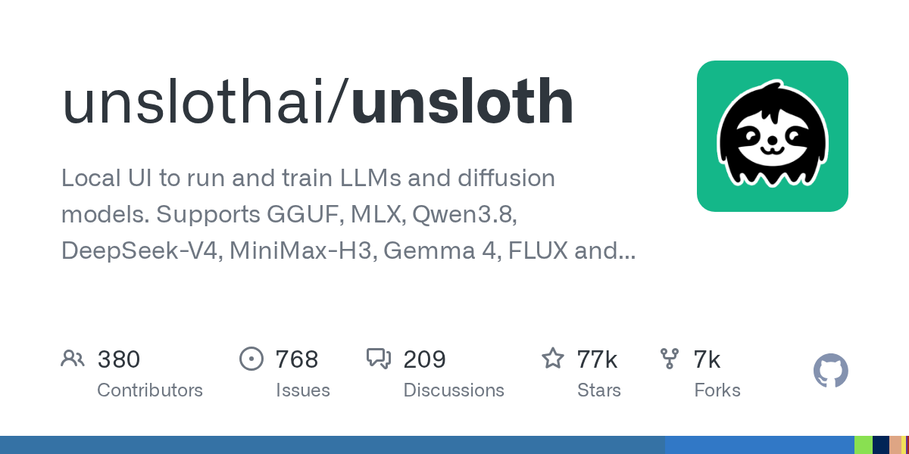

08 GitHub
unslothai/unsloth
사내 PC에서 AI 모델 돌리고 학습하는 도구
★ 76,595이번 주 +385PythonApache-2.0 사내 사용 가능릴리스 v0.1.814-beta (09.22)최근 활동 09.23테스트 있음예제 없음AGENTS.md 없음

Unsloth는 모델 실행과 학습을 함께 다루는 데스크톱 앱으로 소개된다. Windows, macOS, Linux, WSL을 지원하고, NVIDIA·AMD·Intel GPU와 CPU, Vulkan 백엔드까지 폭넓게 적었다. 데스크톱 앱, 웹 UI인 Unsloth Studio, 코드 기반 버전인 Unsloth Core로 나뉜다. 로컬 모델을 Claude Code나 Codex 같은 외부 도구와 연결하는 기능도 전면에 내세운다.
무엇을 하는 물건인가
Unsloth는 PC나 서버에서 AI 모델을 직접 실행하고 학습시키는 도구다. 채팅 모델, 임베딩 모델, 이미지·영상 모델까지 한 화면이나 한 설치 체계 안에서 다룬다. 이 도구가 없으면 사람은 모델 실행, 학습, 배포, 외부 도구 연결을 서로 다른 프로그램으로 따로 맞춰야 한다. 사내 문서창고와 실험실, 배포 창구를 한 건물에 모아 둔 셈이다.
스펙과 도입 조건
- Python 기반 저장소다.
- 네이티브 데스크톱 앱, 웹 UI, Docker 이미지, 코드 기반 설치를 지원한다.
- OpenAI 호환 API와 Anthropic 호환 API를 제공하며, ChatGPT/Codex 구독과 클라우드 제공자 연결도 지원한다.
- 라이선스는 Apache-2.0이다.
- 최신 릴리스는 v0.1.814-beta다.
- Windows, macOS, Linux, WSL을 지원하며, NVIDIA·AMD·Intel GPU와 CPU, Vulkan 백엔드를 지원한다고 밝혔다.
이럴 때 쓰면 좋다
- 고객 상담 분류나 내부 문서 검색용 모델을 외부 반출 없이 사내 GPU 서버에서 돌려야 할 때 검토할 만하다.
- 야간 배치 점검처럼 반복 작업을 Claude Code나 Codex에 맡기되 실제 모델은 내부 장비에서 쓰고 싶을 때 맞다.
- 상품 설명서, 약관, PDF 보고서, CSV를 모아 규정 문서 검색용 데이터셋을 만들고 추가 학습할 때 유용하다.
핵심 기능
- LLM, GGUF, MLX, 디퓨전, 임베딩, 오디오 모델을 실행하고 학습할 수 있다.
- Claude Code, Codex, MCP와 연결해 로컬 모델에서 도구 호출과 코드 실행을 쓸 수 있다.
- PDF, CSV, DOCX 등에서 데이터셋을 만들고 GGUF, NVFP4, FP8 등 형식으로 내보내거나 배포할 수 있다.
성능과 운영 비용
만든 쪽은 학습 속도와 메모리 절감 수치를 여러 항목으로 제시했다. 파인튜닝은 정확도 손실 없이 2배 빠르고 VRAM은 70% 덜 쓴다고 적었다. DiffusionGemma 추론은 1.8배 빠르다고 밝혔다. Qwen3.6 추론은 MTP 사용 시 1.4~2.2배 빠르다고 적었다. MoE LLM 학습은 12배 빠르고 VRAM은 35% 덜 쓴다고 소개했다. 임베딩 파인튜닝은 약 1.8~3.3배 빠르다고 적었다. 다만 이 수치들은 만든 쪽이 소개한 값이며, 같은 문단에 측정 환경과 비교 대상의 세부 조건은 함께 적혀 있지 않다. 운영 측면에서는 멀티 GPU와 원격 HTTPS 공개, LAN 접속, Docker 배포를 지원한다. 공개 접속 시 서버 쪽 도구가 기본으로 켜져 있어 비밀번호 관리나 --disable-tools 같은 통제 설정이 필요하다고 경고한다.
| 항목 | 수치 | 조건·단서 |
|---|---|---|
| 파인튜닝 속도 | 2배 빠름 | 정확도 손실 없음, VRAM 70% 절감 |
| DiffusionGemma 추론 | 1.8배 빠름 | 만든 쪽 소개 수치 |
| Qwen3.6 추론 | 1.4~2.2배 빠름 | MTP 사용 시 |
| MoE LLM 학습 | 12배 빠름 | VRAM 35% 절감 |
| 임베딩 파인튜닝 | 약 1.8~3.3배 빠름 | 만든 쪽 소개 수치 |
| 긴 문맥 학습 | 500K 초과 문맥 가능 | 80GB GPU에서 20B 모델 학습 |
사내 도입 체크
- OpenAI 호환 API와 Anthropic 호환 API를 제공하므로 외부 도구가 내부 모델을 호출하게 만들 수 있다.
- 원격 HTTPS와 LAN 접속을 지원한다. 공개 접속 시 데이터 반출과 권한 통제를 별도로 설계해야 한다.
- 유지보수 주체는 Unsloth 조직이다.
- 상용 대체재는 있다. 다만 이 저장소는 로컬 실행, 학습, 에이전트 연결, API 제공을 한 묶음으로 제공한다.
주요 용어
원문 정보
제목: unslothai/unsloth
최근 활동: 2026.09.23